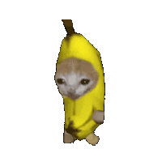

MediaPipe Practice
01 HAND
Minecraft Zombie Hand
손을 꺾으면 좀비가 돌고, 주먹을 쥐면 좀비가 쪼그라든다.
02 POSE
Minecraft Zombie Pose
내 몸 동작을 마인크래프트 좀비가 그대로 따라한다.

03 SEGMENTER
Banana Cat Me
바나나 고양이 얼굴이 내 얼굴로 바뀌고, 스페이스바를 누를 때마다 한 마리씩 줄을 선다.
손을 꺾으면 좀비가 돌고, 주먹을 쥐면 좀비가 쪼그라든다.
내 몸 동작을 마인크래프트 좀비가 그대로 따라한다.

바나나 고양이 얼굴이 내 얼굴로 바뀌고, 스페이스바를 누를 때마다 한 마리씩 줄을 선다.